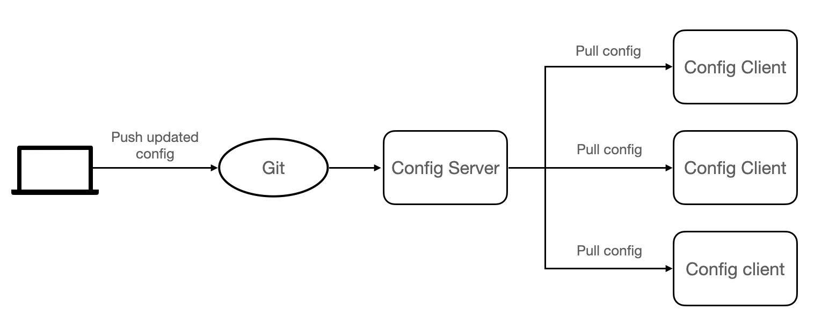
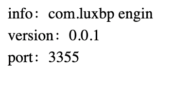
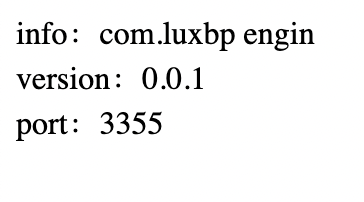
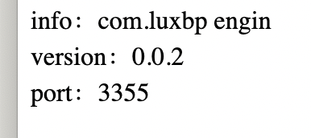

9.1 What is Spring Cloud Config
Spring Cloud Config is a module developed by the Spring Cloud team, which can provide centralized external configuration support for each microservice in the microservice architecture.
To put it simply, Spring Cloud Config can centrally store the configuration files of each microservice in an external storage warehouse or system (such as Git, SVN, etc.), and expose the configurations through REST API to support the operation of each microservice.
Spring Cloud Config consists of the following two parts:
- Config Server: Also known as the distributed configuration center, it is a microservice application that runs independently, used to connect to the configuration warehouse and provide clients with access interfaces to obtain configuration information, encrypted information, and decrypted information.
- Config Client: Refers to each microservice in the microservice architecture, which manages the configuration through the Config Server, and obtains and loads configuration information from the Config Server.
Spring Cloud Config uses Git to store configuration information by default.
9.2 How Spring Cloud Config works
The working principle of Spring Cloud Config is as follows:

The Spring Cloud Config workflow is as follows:
- The developer or maintainer submit the configuration file to the remote Git repository.
- The Config server (distributed configuration center) is responsible for connecting to the configuration warehouse Git, and exposing the interface for obtaining configuration to the Config client.
- The Config client pulls the configuration in the configuration repository through the interface exposed by the Config server.
- Config client obtains configuration information.
9.3 Set up a Config Server
(1) Create a repository (Repository) named springcloud-config on Github and get the address of the repository.
(2) Under parent project “DataEngineSwarm”, create a module named as micro-service-cloud-config-center-3344. Add dependency to pom.xml as follows:
<?xml version="1.0" encoding="UTF-8"?>
<project xmlns="http://maven.apache.org/POM/4.0.0" xmlns:xsi="http://www.w3.org/2001/XMLSchema-instance"
xsi:schemaLocation="http://maven.apache.org/POM/4.0.0 https://maven.apache.org/xsd/maven-4.0.0.xsd">
<modelVersion>4.0.0</modelVersion>
<parent>
<artifactId>DataEngineSwarm</artifactId>
<groupId>com.luxbp</groupId>
<version>0.0.1-SNAPSHOT</version>
</parent>
<groupId>com.luxbp/groupId>
<artifactId>micro-service-cloud-config-center-3344</artifactId>
<version>0.0.1-SNAPSHOT</version>
<name>micro-service-cloud-config-center-3344</name>
<description>Demo project for Spring Boot</description>
<properties>
<java.version>1.8</java.version>
</properties>
<dependencies>
<dependency>
<groupId>org.springframework.boot</groupId>
<artifactId>spring-boot-starter</artifactId>
</dependency>
<dependency>
<groupId>org.springframework.boot</groupId>
<artifactId>spring-boot-starter-test</artifactId>
<scope>test</scope>
</dependency>
<dependency>
<groupId>org.springframework.cloud</groupId>
<artifactId>spring-cloud-config-server</artifactId>
</dependency>
<dependency>
<groupId>org.springframework.boot</groupId>
<artifactId>spring-boot-starter-web</artifactId>
</dependency>
<dependency>
<groupId>org.springframework.cloud</groupId>
<artifactId>spring-cloud-starter-netflix-eureka-client</artifactId>
</dependency>
</dependencies>
<build>
<plugins>
<plugin>
<groupId>org.springframework.boot</groupId>
<artifactId>spring-boot-maven-plugin</artifactId>
</plugin>
</plugins>
</build>
</project>
(3) Under /resources, create the configuration file “application.yml”, the content is as follows:
server:
port: 3344
spring:
application:
name: spring-cloud-config-center
cloud:
config:
server:
git:
uri: https://github.com/dustwh/springcloud-config.git
search-paths:
- springcloud-config
force-pull: true
label: main
eureka:
client:
service-url:
defaultZone: http://eureka7001.com:7001/eureka/,http://eureka7002.com:7002/eureka/,http://eureka7003.com:7003/eureka/
management:
endpoints:
web:
exposure:
include: 'bus-refresh'
(4) On the main startup class of micro-service-cloud-config-center-3344, use the @EnableConfigServer annotation to enable the Spring Cloud Config configuration center function, the code is as follows.
package com.luxbp;
import org.springframework.boot.SpringApplication;
import org.springframework.boot.autoconfigure.SpringBootApplication;
import org.springframework.cloud.config.server.EnableConfigServer;
import org.springframework.cloud.netflix.eureka.EnableEurekaClient;
@SpringBootApplication
@EnableEurekaClient
@EnableConfigServer
public class MicroServiceCloudConfigCenter3344Application {
public static void main(String[] args) {
SpringApplication.run(MicroServiceCloudConfigCenter3344Application.class, args);
}
}
(5) Create a new file named config-dev.yml and upload it to the main branch of the springcloud-config warehouse. The content of config-dev.yml is as follows.
config:
info: com.luxbp engin
version: 0.0.1
(6) Run Eureka cluster and
micro-service-cloud-config-center-3344, visit “http://localhost:3344/master/config-dev.yml”, result is as follows:

(7) modify configuration file access rule:
Spring Cloud Config specifies a set of configuration file access rules, as shown in the following table:
| access
rules |
show case |
|
/{application}/{profile}[/{label}] |
/config/dev/master |
|
/{application}-{profile}.{suffix} |
/config-dev.yml |
|
/{label}/{application}-{profile}.{suffix} |
/main/config-dev.yml |
The parameters in the access rules are described as follows:
- {application}: Application name, that is, the name of the configuration file, such as config-dev.
- {profile}: Environment name. A project usually has a development (dev) version, a test (test) environment version, and a production (prod) environment version. The configuration file is distinguished in the form of application-{profile}.yml, such as application -dev.yml, application-test.yml, application-prod.yml, etc.
- {label}: Git branch name, the default is the master branch. When accessing the configuration file under the default branch, this parameter can be omitted, which is the second access method.
- {suffix}: The suffix of the configuration file, for example, the suffix of config-dev.yml is yml.
Through this set of rules, we can directly access the configuration file on the browser.
For example, through configuring correct access rule, we can access the config file by visit the url like ”http://localhost:3344/config-dev.yml” / “http://localhost:3344/config/dev/master”.
9.4 Set up a Config Client
(1). Under the parent project DataEngineSwarm, create a Spring Boot module named micro-service-cloud-config-client-3355, and add Spring Cloud Config client dependencies to its pom.xml. The configuration content is as follows .
<?xml version="1.0" encoding="UTF-8"?>
<project xmlns="http://maven.apache.org/POM/4.0.0" xmlns:xsi="http://www.w3.org/2001/XMLSchema-instance"
xsi:schemaLocation="http://maven.apache.org/POM/4.0.0 https://maven.apache.org/xsd/maven-4.0.0.xsd">
<modelVersion>4.0.0</modelVersion>
<parent>
<artifactId>DataEngineSwarm</artifactId>
<groupId>com.luxbp</groupId>
<version>0.0.1-SNAPSHOT</version>
</parent>
<groupId>com.luxbp</groupId>
<artifactId>micro-service-cloud-config-client-3355</artifactId>
<version>0.0.1-SNAPSHOT</version>
<name>micro-service-cloud-config-client-3355</name>
<description>Demo project for Spring Boot</description>
<properties>
<java.version>1.8</java.version>
</properties>
<dependencies>
<dependency>
<groupId>org.springframework.boot</groupId>
<artifactId>spring-boot-starter-web</artifactId>
</dependency>
<dependency>
<groupId>org.springframework.boot</groupId>
<artifactId>spring-boot-devtools</artifactId>
<scope>runtime</scope>
<optional>true</optional>
</dependency>
<dependency>
<groupId>org.projectlombok</groupId>
<artifactId>lombok</artifactId>
<optional>true</optional>
</dependency>
<dependency>
<groupId>org.springframework.boot</groupId>
<artifactId>spring-boot-starter-test</artifactId>
<scope>test</scope>
</dependency>
<dependency>
<groupId>org.springframework.cloud</groupId>
<artifactId>spring-cloud-starter-config</artifactId>
</dependency>
<dependency>
<groupId>org.springframework.cloud</groupId>
<artifactId>spring-cloud-starter-netflix-eureka-client</artifactId>
</dependency>
</dependencies>
<build>
<plugins>
<plugin>
<groupId>org.springframework.boot</groupId>
<artifactId>spring-boot-maven-plugin</artifactId>
<configuration>
<excludes>
<exclude>
<groupId>org.projectlombok</groupId>
<artifactId>lombok</artifactId>
</exclude>
</excludes>
</configuration>
</plugin>
</plugins>
</build>
</project>
(2). Under the classpath (/resources directory) in micro-service-cloud-config-client-3355, create a configuration file named bootstrap.yml, the configuration is as follows.
server:
port: 3355
spring:
application:
name: spring-cloud-config-client
cloud:
config:
label: main
name: config
profile: dev
uri: http://localhost:3344
eureka:
client:
service-url:
defaultZone: http://eureka7001.com:7001/eureka/,http://eureka7002.com:7002/eureka/,http://eureka7003.com:7003/eureka/
management:
endpoints:
web:
exposure:
include: "*"
(3) Under the controller package, create a class named ConfigClientController to obtain the configuration in the configuration file through this class, the code is as follows.
package com.luxbp.controller;
import org.springframework.beans.factory.annotation.Value;
import org.springframework.web.bind.annotation.GetMapping;
import org.springframework.web.bind.annotation.RestController;
@RestController
public class ConfigClientController {
@Value("${server.port}")
private String serverPort;
@Value("${config.info}")
private String configInfo;
@Value("${config.version}")
private String configVersion;
@GetMapping(value = "/getConfig")
public String getConfig() {
return "info：" + configInfo + "<br/>version：" + configVersion + "<br/>port：" + serverPort;
}
}
(4) On the main startup class of micro-service-cloud-config-client-3355, use the @EnableEurekaClient annotation to enable the Eureka client function, the code is as follows.
package com.luxbp;
import org.springframework.boot.SpringApplication;
import org.springframework.boot.autoconfigure.SpringBootApplication;
import org.springframework.cloud.netflix.eureka.EnableEurekaClient;
@SpringBootApplication
@EnableEurekaClient
public class MicroServiceCloudConfigClient3355Application {
public static void main(String[] args) {
SpringApplication.run(MicroServiceCloudConfigClient3355Application.class, args);
}
}
(5). Start micro-service-cloud-config-client-3355, use a browser to access "
http://localhost:3355/getConfig", the result is as shown below.

(6). Change the value of config.version in the configuration file config-dev.yml to 2.0, the configuration is as follows.
config:
info: com.luxbp engin
version: 0.0.2
(7). Start the Eureka service registry (cluster) and micro-service-cloud-config-center-3344 in sequence, and use a browser to access "
http://localhost:3344/master/config-dev.yml", the result is as shown in the figure below.

It can be seen from the figure that the configuration center has successfully obtained the modified configuration.
(8). Visit "
http://localhost:3355/getConfig" again, and try to obtain the modified configuration information through the Spring Cloud Config client. The result is as shown in the figure below.
(9). Restart micro-service-cloud-config-client-3355, and access "
http://localhost:3355/getConfig" again, the result is as shown below
Through this example, we can get the following two conclusions:
- After the configuration is updated, the Spring Cloud Config server (Server) can get the latest configuration directly from the Git repository.
- Unless the Spring Cloud Config client (Client) is restarted, the latest configuration information cannot be obtained through the Spring Cloud Config server.